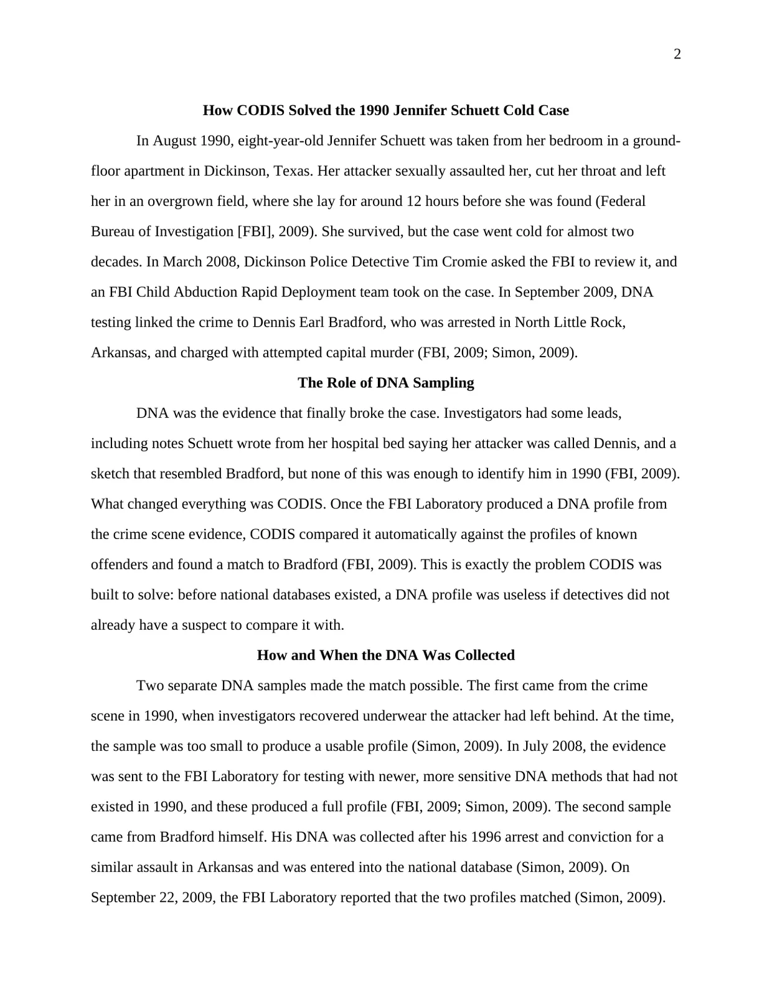

L07 CODIS cold case
The task
Research a case solved with CODIS, the FBI's national DNA database, explain how the DNA was collected and matched, and argue what should happen to DNA from people who are never convicted. Written in APA style.
What I made
A four-page APA paper on the 1990 Jennifer Schuett case in Dickinson, Texas. The case went cold for almost two decades. Newer DNA testing on the original evidence produced a full profile in 2008, and CODIS matched it to an offender whose DNA had been on file since a 1996 conviction.
I argued that DNA from people who are never convicted should be removed from CODIS automatically. Under current FBI policy, removal only happens if the person sends a written request with a certified court order, which puts the burden on the people who did nothing wrong.

See the other 3 pages


Download the original (PDF, 4 pages, 47 KB)
Reflection
Taking a side was harder than the research. The Schuett case shows how much a DNA database can do, solving a crime nearly twenty years later. But I still argued that DNA from people who are never convicted should be removed automatically, without them needing a court order.
Arguing against the system after showing what it achieved felt uncomfortable. I think that's the point of the privacy question, though: something being useful doesn't settle whether it's fair.